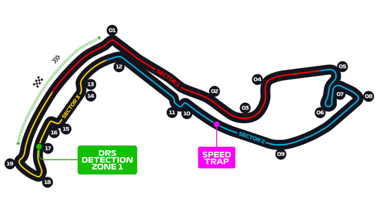
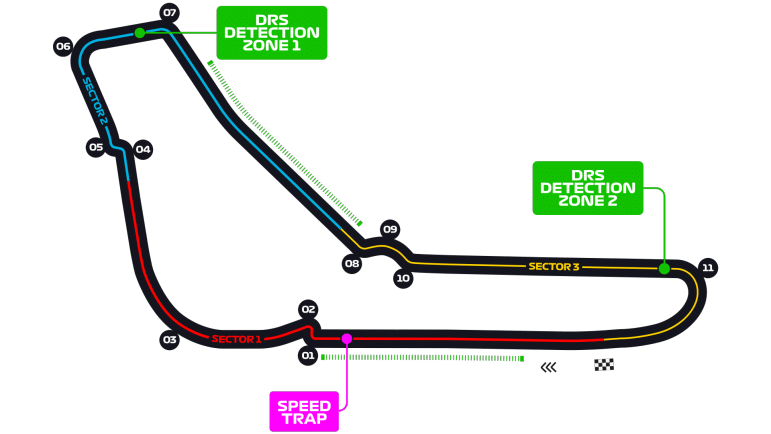
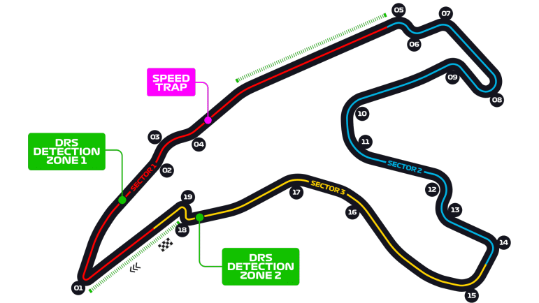
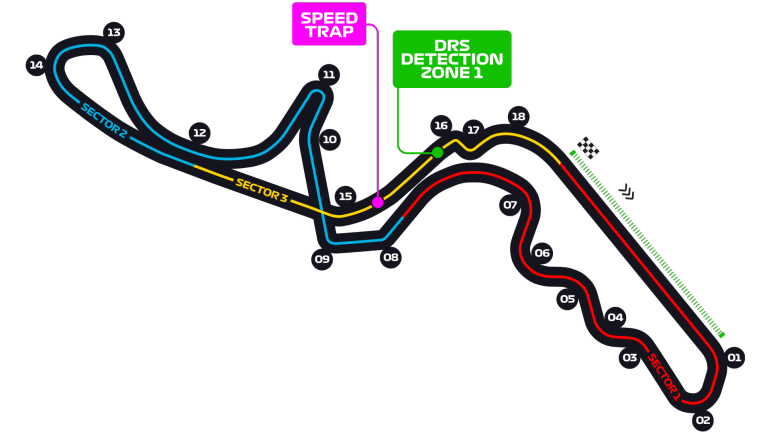
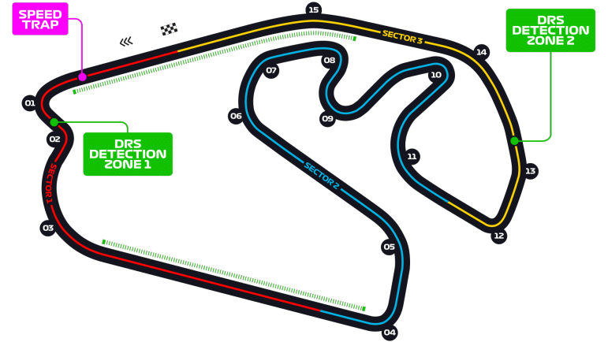
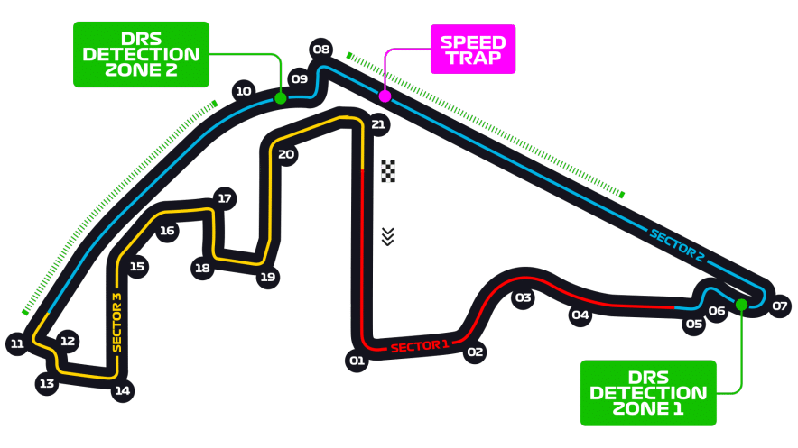
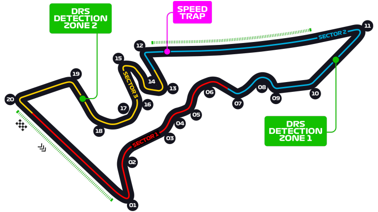

#1

🇲🇨
Circuit de Monaco
Monte Carlo, Mónaco
Longitud
3.337 km
Vueltas
78
Desde
1950
Récord de vuelta
1:12.909
Lando Norris · McLaren · 2024
#2

🇮🇹
Autodromo di Monza
Monza, Italia
Longitud
5.793 km
Vueltas
53
Desde
1950
Récord de vuelta
1:21.046
R. Barrichello · Ferrari · 2004
#3
🇬🇧
Silverstone Circuit
Northamptonshire, Reino Unido
Longitud
5.891 km
Vueltas
52
Desde
1950
Récord de vuelta
1:27.097
Max Verstappen · Red Bull · 2020
#4

Spa-Francorchamps
Stavelot, Bélgica
Longitud
7.004 km
Vueltas
44
Desde
1950
Récord de vuelta
1:41.252
Valtteri Bottas · Mercedes · 2018
#5
>

🇯🇵
Suzuka Circuit
Suzuka, Japón
Longitud
5.807 km
Vueltas
53
Desde
1987
Récord de vuelta
1:30.983
Lewis Hamilton · Mercedes · 2019
#6

🇧🇷
Autódromo Interlagos
São Paulo, Brasil
Longitud
4.309 km
Vueltas
71
Desde
1973
Récord de vuelta
1:10.540
Valtteri Bottas · Mercedes · 2018
#7
🇦🇺
Albert Park Circuit
Melbourne, Australia
Longitud
5.278 km
Vueltas
58
Desde
1996
Récord de vuelta
1:19.813
Charles Leclerc · Ferrari · 2022
#8

🇦🇪
Yas Marina Circuit
Abu Dhabi, Emiratos Árabes
Longitud
5.281 km
Vueltas
58
Desde
2009
Récord de vuelta
1:26.103
Max Verstappen · Red Bull · 2021
#4

🇺🇸
Circuit of the Americas
Austin, Texas, EE.UU.
Longitud
5.513 km
Vueltas
56
Desde
2012
Récord de vuelta
1:36.169
Charles Leclerc · Ferrari · 2019